Rota no mapa completo

Consolidação de 2026-10-10: geometria local, numeração leve, carros estacionados compartilhados, materiais independentes de MSAA e passeio praça → oficina. Arraste os controles para comparar a mesma câmera.
Capturas de arquitetura são estáticas, com névoa e distância desativadas. Spawn/HUD usam a câmera jogável; a captura noturna restaura as opções de desenho. Estas imagens não certificam FPS nem aprovação artística.
Resultados e limites da revisão
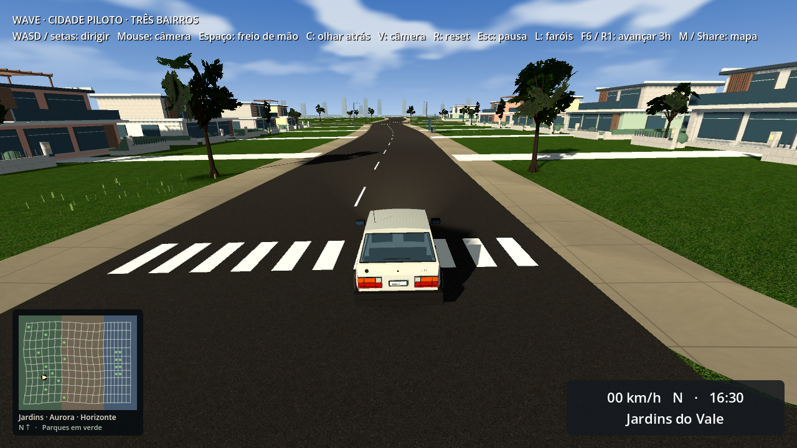
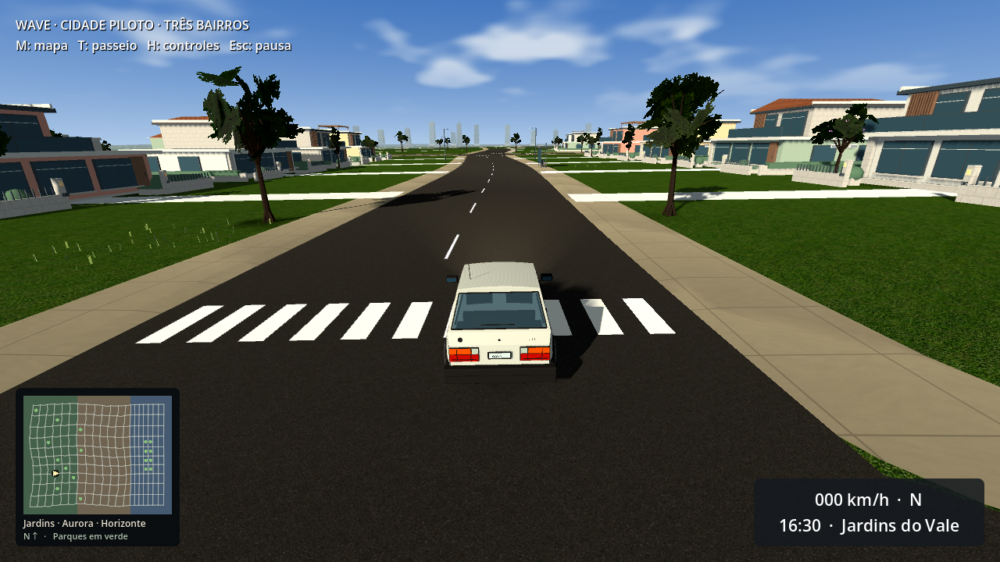
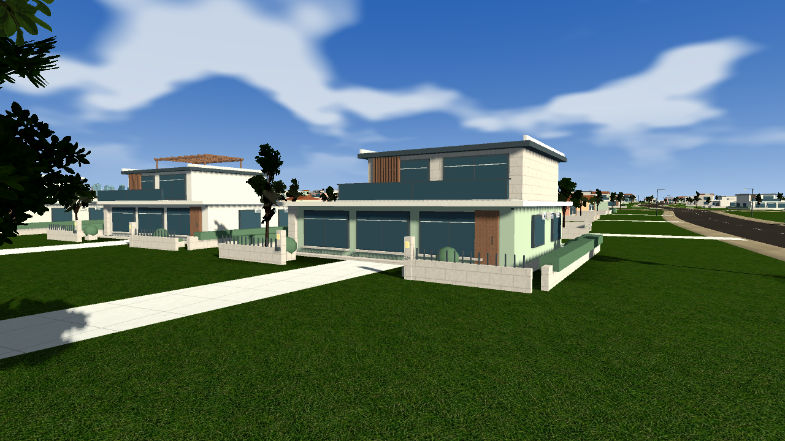
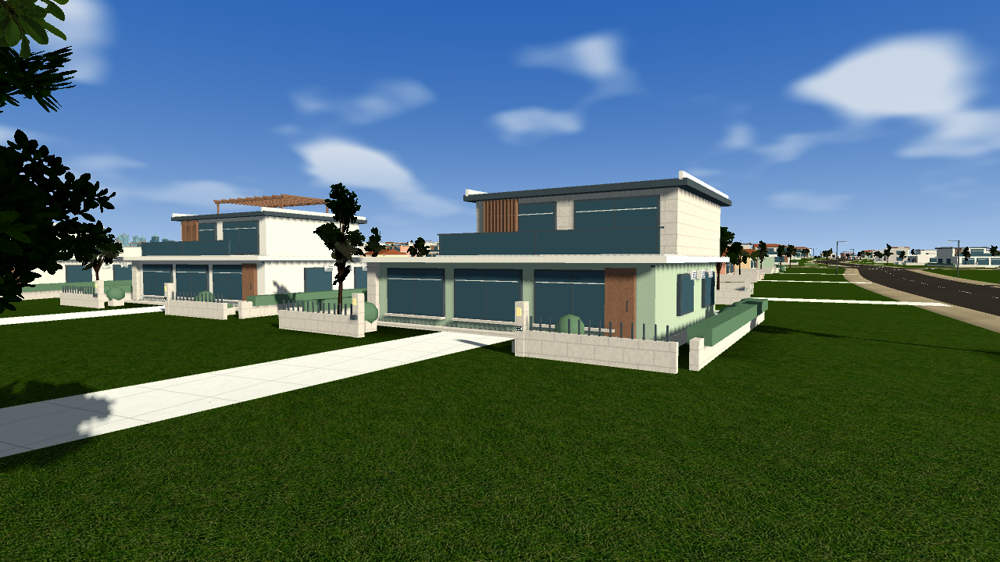
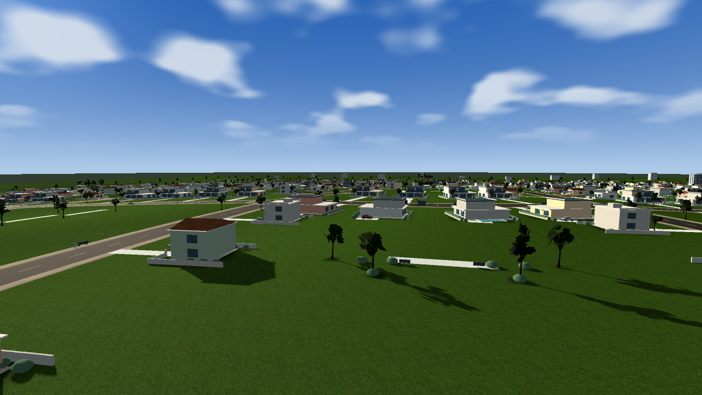
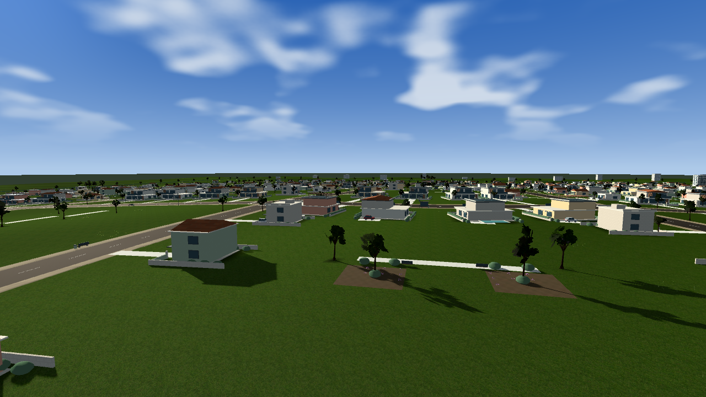
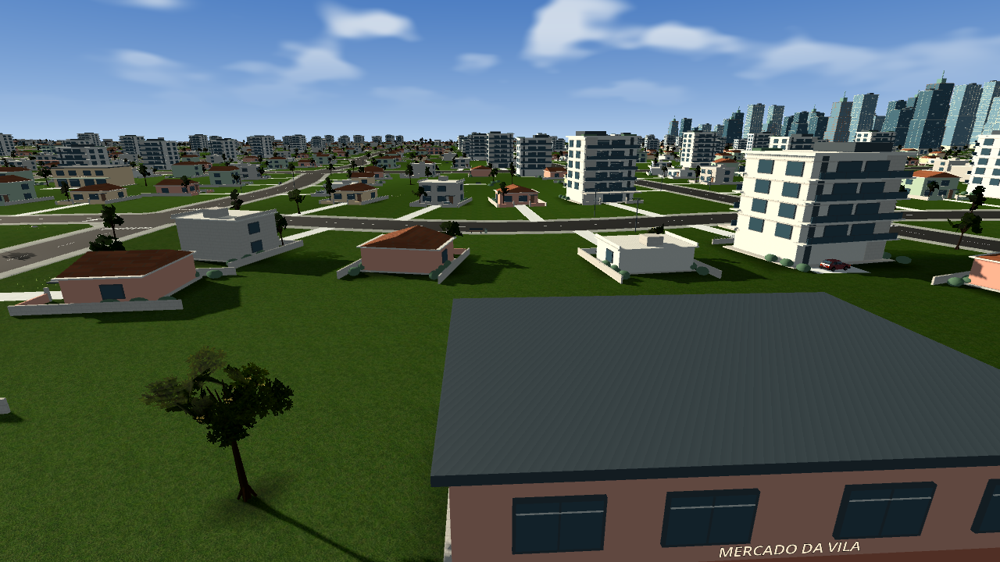
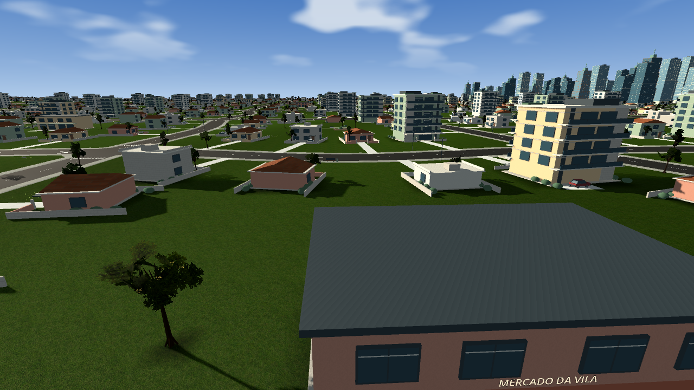
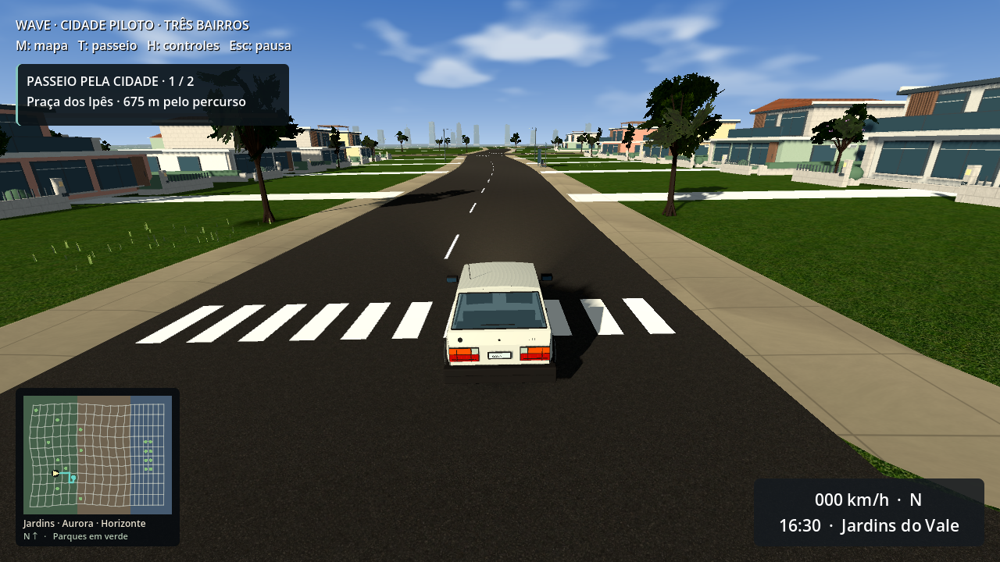
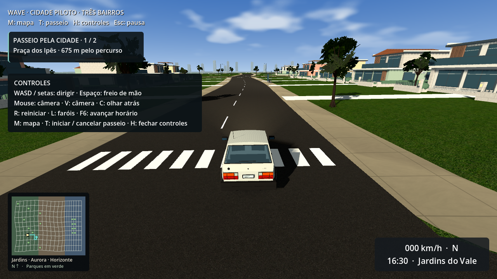
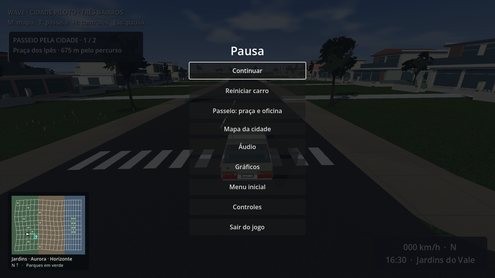
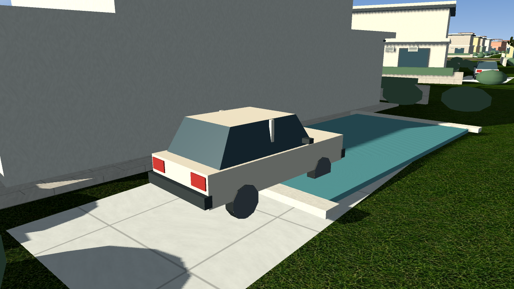
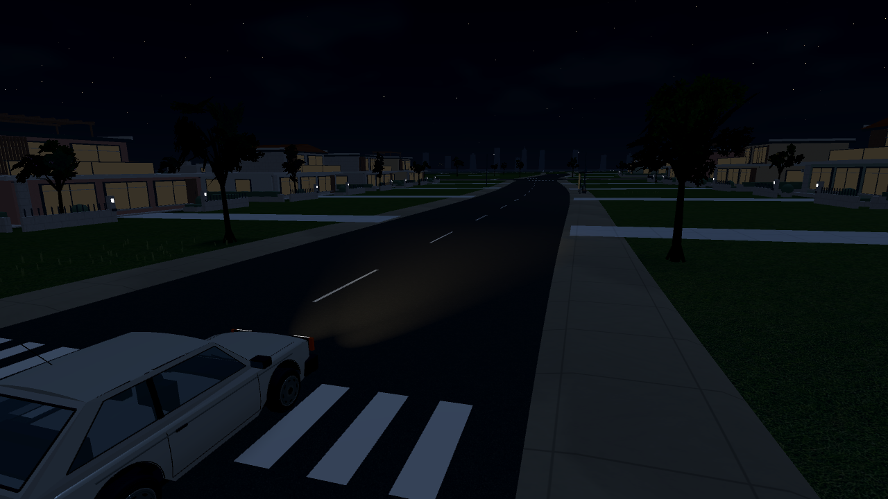
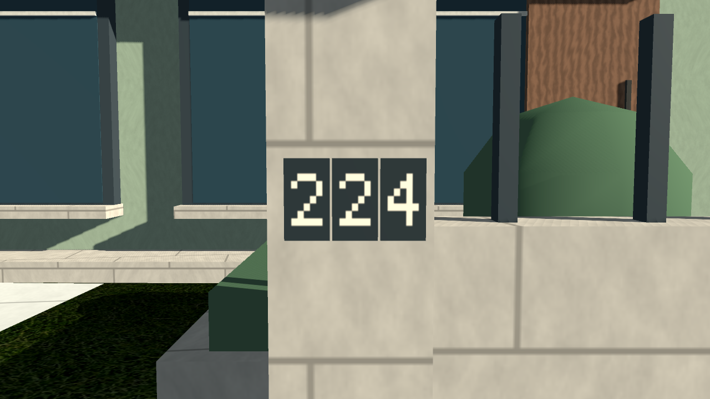